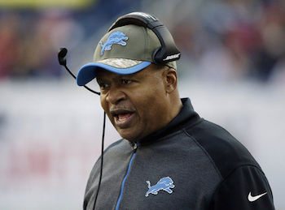
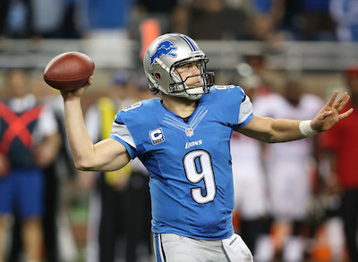
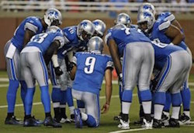

Mainly focusing on the Quaterback, The head coach and the offense.
My Project will be about the trials and tribulations of the NFL team the Detroit lions as they go thru the 2015-2016 NFL season.
my project will be about the Detroit lions 2015-2016 NFL season.
My Project will be about the trials and tribulations of the NFL team the Detroit lions as they go thru the 2015-2016 NFL season. The NFL seasons is 16 weeks along not including the playoffs, and during these 16 weeks the Detroit lions will go thru many trials and tribulations such as losses, wins, injuries, and maybe even a championship. I watch every game , every week and I'm a loyal fan and have been since the age of 10 or so..
The Detroit lions have not always been a good team, a few years back they actually lost every game going 0-16. Just now recently within the last 3 years they've gotten better and starting to b recognized as a good team but people still have their doubts so i feel like it would be interesting to do a project on this
|  Detroit lions headcoach |
 Detroit lions quaterback |
 Detroit lions offense |
|---|